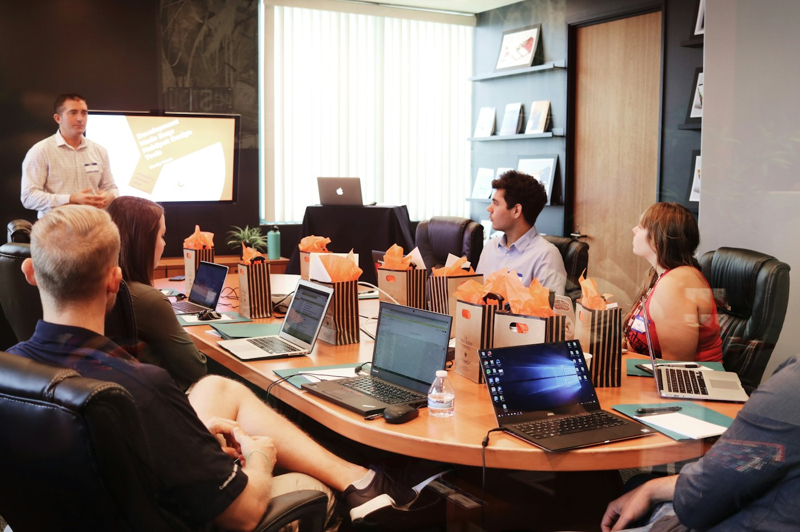

Copilot Fundamentals
Everyday AI in Word, Excel, Outlook, and Teams: prompting, summarizing, drafting, and building daily habits that stick.
AI Adoption & Change Management
I drive AI adoption by enabling people to get the most out of tools like Copilot Studio, and by using AI itself to help teams identify the use cases worth building. Driving adoption covers the whole path: enablement training, defining the use case, knowing which connectors and flows it needs, and getting the solution into everyday use.
I've designed and delivered training across the full Microsoft Copilot stack and SharePoint, from first prompts to production agents.
Everyday AI in Word, Excel, Outlook, and Teams: prompting, summarizing, drafting, and building daily habits that stick.
No-code agents for focused, single-purpose jobs, built by the people who do the work.
From basics to advanced:
Experienced site creator. I use SharePoint as the foundation for AI solutions: the knowledge sources agents are grounded in, and the lists and libraries they read from and write to.
I also build the training that gets an agent out of a personal environment and into production, so good ideas don't stall after the prototype.
Three steps: find the right problem, build the solution, and make sure people actually use it.
This is where most AI efforts stall. People know they want AI but can't say what problem it should solve. I use AI to close that gap: a discovery agent asks your teams the right questions and helps turn everyday frustrations into clear, specific use cases, written as user stories: "As a [role], I want to [do X], so that [outcome]."

I'm a Copilot Studio expert. I help your teams build agents for their use cases, including the connectors and flows each one needs, and train them to build their own. Every session is grounded in your environment: your DLP policies, your internal AI policy, and the best practices that keep agents secure and useful.
As an adoption and change manager, I follow a structured change management methodology: leadership alignment, clear communication, AI Champion networks, role-based training, and reinforcement. I also use AI to drive adoption itself, with support agents that answer "how do I use this?" and point people to the right training.
AI adoption and enablement work across financial services, energy, life sciences, and nonprofit.
Copilot, Copilot Studio, and ChatGPT walkthroughs and training videos.
Demos, tips, and training sessions on getting real work done with AI.
My name is Andrew Leonardi, and I have over 20 years of experience in change management, training and enablement, technology adoption, project management, and instructional design.
That background is exactly what AI adoption needs. AI is the latest in a long line of technology rollouts, and the same lessons apply: people adopt what they understand, what fits their daily work, and what they've been supported through. I know how to plan a rollout, design training that sticks, and guide people through change, and now I apply all of that to AI.
I directed enterprise-wide AI enablement at BlackRock, ran engagements for Genmab and UJA-Federation of New York, and I'm currently Lead Training Manager for Copilot Studio at Constellation Energy.
Tell me about your team and what's slowing them down. I'll help you find the use case worth building first.
Or reach out directly: drew.leonardi@gmail.com